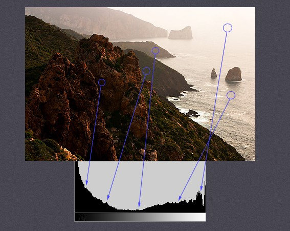

히스토그램¶
Goal¶
- OpenCV를 이용하여 Histogram을 찾을 수 있다.
- OpenCV와 Matplotlib를 이용하여 Histogram을 표현할 수 있다.
cv2.calcHist()와np.histogram()함수를 사용할 수 있다.
Histogram¶
Histogram은 이미지의 밝기의 분포를 그래프로 표현한 방식입니다. 히스토그램을 이용하면 이미지의 전체의 밝기 분포와 채도(색의 밝고 어두움)를 알 수 있습니다.

Histogram<출처 : Cambridgeincolor in Color
위 그림의 아래 그래프를 보면 X축이 색의 강도(0 ~ 255), Y축이 X축에 해당하는 색의 갯수 입니다. 그래프만 보면 이미지 밝기의 분포가 중간값은 거의 없고, 어둡고 밝은 색 분포가 많다는 것을 알 수 있습니다. 실제 원본 이미지를 보면 그래프만 보고 분석한 결과와 유사합니다.
히스토그램 찾기¶
히스토그램을 분석하기 전에 몇가지 용어에 대해서 알아 보겠습니다.
- BINS : 히스토그램 그래프의 X축의 간격입니다. 위 그림의 경우에는 0 ~ 255를 표현하였기 때문에 BINS값은 256이 됩니다. BINS값이 16이면 0 ~ 15, 16 ~ 31..., 240 ~ 255와 같이 X축이 16개로 표현이 됩니다. OpenCV에서는 BINS를 histSize 라고 표현합니다.
- DIMS : 이미지에서 조사하고자하는 값을 의미합니다. 빛의 강도를 조사할 것인지, RGB값을 조사할 것인지를 결정합니다.
- RANGE : 측정하고자하는 값의 범위입니다. 즉, X축의 from ~ to로 이해할 수 있습니다.
Histogram in OpenCV¶
OpenCV에서 Histogram분석을 위해서 cv2.calcHist() 함수를 사용합니다.
-
cv2.calcHist(images, channels, mask, histSize, ranges[, hist[, accumulate]])¶ Parameters: - image – 분석대상 이미지(uint8 or float32 type). Array형태.
- channels – 분석 채널(X축의 대상). 이미지가 graysacle이면 [0], color 이미지이면 [0],[0,1] 형태(1 : Blue, 2: Green, 3: Red)
- mask – 이미지의 분석영역. None이면 전체 영역.
- histSize – BINS 값. [256]
- ranges – Range값. [0,256]
아래 2가지 이미지를 Grayscale로 읽어 빛의 세기 분포를 보여주는 예제입니다.
1 2 3 4 5 6 7 8 9 10 11 12 13 14 15 16 17 | #-*- coding:utf-8 -*-
import cv2
import numpy as np
import random
from matplotlib import pyplot as plt
img1 = cv2.imread('images/flower1.jpg',0)
img2 = cv2.imread('images/flower2.jpg',0)
hist1 = cv2.calcHist([img1],[0],None,[256],[0,256])
hist2 = cv2.calcHist([img2],[0],None,[256],[0,256])
plt.subplot(221),plt.imshow(img1,'gray'),plt.title('Red Line')
plt.subplot(222),plt.imshow(img2,'gray'),plt.title('Green Line')
plt.subplot(223),plt.plot(hist1,color='r'),plt.plot(hist2,color='g')
plt.xlim([0,256])
plt.show()
|
Result

Red Line이미지는 전체적으로 어둡기 때문에 히스토그램에서 좌측의 분포가 높고, Green Line 이미지는 전체적으로 밝기 때문에 오른쪽의 분포가 높습니다.
Mask를 적용한 히스토그램¶
이미지의 특정 영역의 히스토그램을 분석하기 위해서 mask를 적용할 수 있습니다.
아래는 이미지에 mask를 적용한 예제입니다.
1 2 3 4 5 6 7 8 9 10 11 12 13 14 15 16 17 18 19 20 21 22 23 24 25 26 27 28 29 30 31 | #-*-coding:utf-8-*-
import cv2
import numpy as np
from matplotlib import pyplot as plt
img = cv2.imread('images/lena.png');
# mask생성
mask = np.zeros(img.shape[:2],np.uint8)
mask[100:300,100:400] = 255
# 이미지에 mask가 적용된 결과
masked_img = cv2.bitwise_and(img,img,mask=mask)
# 원본 이미지의 히스토그램
hist_full = cv2.calcHist([img],[1],None,[256],[0,256])
# mask를 적용한 히스트로그램
hist_mask = cv2.calcHist([img],[1],mask,[256],[0,256])
plt.subplot(221),plt.imshow(img,'gray'),plt.title('Origianl Image')
plt.subplot(222),plt.imshow(mask,'gray'),plt.title('Mask')
plt.subplot(223),plt.imshow(masked_img,'gray'),plt.title('Masked Image')
# red는 원본이미지 히스토그램, blue는 mask적용된 히스토그램
plt.subplot(224),plt.title('Histogram')
plt.plot(hist_full,color='r'),plt.plot(hist_mask,color='b')
plt.xlim([0,256])
plt.show()
|
Result